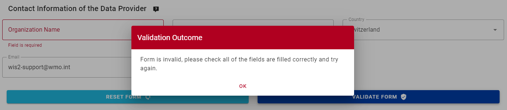
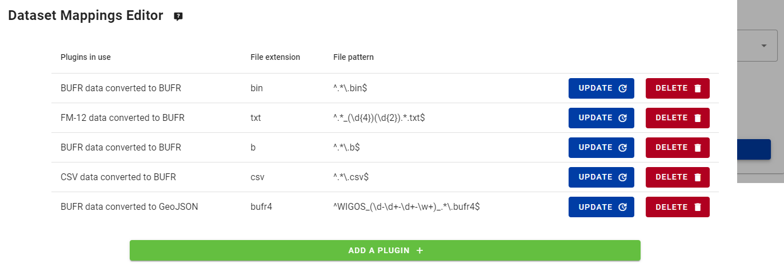

Configuración de conjuntos de datos en wis2box
Resultados de aprendizaje
Al final de esta sesión práctica, serás capaz de:
- crear un nuevo conjunto de datos
- crear metadatos de descubrimiento para un conjunto de datos
- configurar mapeos de datos para un conjunto de datos
- publicar una notificación WIS2 con un registro WCMP2
- actualizar y volver a publicar tu conjunto de datos
Introducción
wis2box utiliza conjuntos de datos que están asociados con metadatos de descubrimiento y mapeos de datos.
Los metadatos de descubrimiento se utilizan para crear un registro WCMP2 (Perfil de Metadatos Básicos de la OMM 2) que se comparte mediante una notificación WIS2 publicada en tu wis2box-broker.
Los mapeos de datos se utilizan para asociar un complemento de datos a tus datos de entrada, permitiendo que tus datos se transformen antes de ser publicados mediante la notificación WIS2.
Esta sesión te guiará a través de la creación de un nuevo conjunto de datos, la creación de metadatos de descubrimiento y la configuración de mapeos de datos. Inspeccionarás tu conjunto de datos en la wis2box-api y revisarás la notificación WIS2 para tus metadatos de descubrimiento.
Preparación
Conéctate a tu broker utilizando MQTT Explorer.
En lugar de usar las credenciales internas de tu broker, usa las credenciales públicas everyone/everyone:

Note
Nunca necesitas compartir las credenciales de tu broker interno con usuarios externos. El usuario 'everyone' es un usuario público para habilitar la compartición de notificaciones WIS2.
Las credenciales everyone/everyone tienen acceso de solo lectura en el tema 'origin/a/wis2/#'. Este es el tema donde se publican las notificaciones WIS2. El Broker Global puede suscribirse con estas credenciales públicas para recibir las notificaciones.
El usuario 'everyone' no verá temas internos ni podrá publicar mensajes.
Abre un navegador y abre una página a http://<tu-host>/wis2box-webapp. Asegúrate de estar conectado y poder acceder a la página 'editor de conjuntos de datos'.
Consulta la sección sobre Iniciando wis2box si necesitas recordar cómo conectarte al broker o acceder a la wis2box-webapp.
Crear un token de autorización para procesos/wis2box
Necesitarás un token de autorización para el punto final 'procesos/wis2box' para publicar tu conjunto de datos.
Para crear un token de autorización, accede a tu VM de entrenamiento por SSH y usa los siguientes comandos para iniciar sesión en el contenedor de gestión de wis2box:
cd ~/wis2box-1.0.0rc1
python3 wis2box-ctl.py login
Luego ejecuta el siguiente comando para crear un token de autorización generado aleatoriamente para el punto final 'procesos/wis2box':
wis2box auth add-token --path processes/wis2box
También puedes crear un token con un valor específico proporcionando el token como argumento al comando:
wis2box auth add-token --path processes/wis2box MyS3cretToken
Asegúrate de copiar el valor del token y almacenarlo en tu máquina local, ya que lo necesitarás más adelante.
Una vez que tengas tu token, puedes salir del contenedor de gestión de wis2box:
exit
Creando un nuevo conjunto de datos en la wis2box-webapp
Navega a la página 'editor de conjuntos de datos' en la wis2box-webapp de tu instancia de wis2box yendo a http://<tu-host>/wis2box-webapp y seleccionando 'editor de conjuntos de datos' en el menú del lado izquierdo.
En la página 'editor de conjuntos de datos', bajo la pestaña 'Conjuntos de datos', haz clic en "Crear nuevo ...":

Aparecerá una ventana emergente, pidiéndote que proporciones:
- ID del Centro: este es el acrónimo de la agencia (en minúsculas y sin espacios), como lo especifica el Miembro de la OMM, que identifica el centro de datos responsable de publicar los datos.
- Tipo de Datos: El tipo de datos para los que estás creando metadatos. Puedes elegir entre usar una plantilla predefinida o seleccionar 'otro'. Si se selecciona 'otro', se tendrán que llenar más campos manualmente.
ID del Centro
Tu id de centro debe comenzar con el TLD de tu país, seguido de un guión (-) y un nombre abreviado de tu organización (por ejemplo, es-aemet). El id de centro debe estar en minúsculas y usar solo caracteres alfanuméricos. La lista desplegable muestra todos los id de centro actualmente registrados en WIS2, así como cualquier id de centro que ya hayas creado en wis2box.
Plantillas de Tipo de Datos
El campo Tipo de Datos te permite seleccionar de una lista de plantillas disponibles en el editor de conjuntos de datos de la wis2box-webapp. Una plantilla prellenará el formulario con valores predeterminados sugeridos apropiados para el tipo de datos. Esto incluye títulos y palabras clave sugeridos para los metadatos y complementos de datos preconfigurados. El tema será fijo al tema predeterminado para el tipo de datos.
Para el propósito del entrenamiento, usaremos el tipo de datos weather/surface-based-observations/synop que incluye complementos de datos que aseguran que los datos se transformen al formato BUFR antes de ser publicados.
Si deseas publicar alertas CAP usando wis2box, utiliza la plantilla weather/advisories-warnings. Esta plantilla incluye un complemento de datos que verifica que los datos de entrada sean una alerta CAP válida antes de publicar. Para crear alertas CAP y publicarlas a través de wis2box, puedes usar CAP Composer.
Por favor, elige un id de centro apropiado para tu organización.
Para Tipo de Datos, selecciona weather/surface-based-observations/synop:

Haz clic en continuar al formulario para proceder, ahora se te presentará el Formulario del Editor de Conjuntos de Datos.
Dado que seleccionaste el tipo de datos weather/surface-based-observations/synop, el formulario estará prellenado con algunos valores iniciales relacionados con este tipo de datos.
Creando metadatos de descubrimiento
El Formulario del Editor de Conjuntos de Datos te permite proporcionar los Metadatos de Descubrimiento para tu conjunto de datos que el contenedor de gestión de wis2box utilizará para publicar un registro WCMP2.
Dado que has seleccionado el tipo de datos 'weather/surface-based-observations/synop', el formulario estará prellenado con algunos valores predeterminados.
Asegúrate de reemplazar el 'ID Local' generado automáticamente con un nombre descriptivo para tu conjunto de datos, por ejemplo, 'conjunto-datos-synop-wis2entrenamiento':

Revisa el título y las palabras clave, y actualízalos según sea necesario, y proporciona una descripción para tu conjunto de datos.
Nota que hay opciones para cambiar la 'Política de Datos de la OMM' de 'core' a 'recomendada' o modificar tu Identificador de Metadatos predeterminado, por favor, mantén la política de datos como 'core' y usa el Identificador de Metadatos predeterminado.
A continuación, revisa la sección que define tus 'Propiedades Temporales' y 'Propiedades Espaciales'. Puedes ajustar el cuadro delimitador actualizando los campos 'Latitud Norte', 'Latitud Sur', 'Longitud Este' y 'Longitud Oeste':

A continuación, completa la sección que define la 'Información de Contacto del Proveedor de Datos':

Finalmente, completa la sección que define la 'Información de Calidad de los Datos':
Una vez que hayas completado todas las secciones, haz clic en 'VALIDAR FORMULARIO' y verifica el formulario en busca de errores:

Si hay errores, corrígelos y haz clic en 'VALIDAR FORMULARIO' nuevamente.
Asegurándote de que no haya errores y que recibas una indicación emergente de que tu formulario ha sido validado:

A continuación, antes de enviar tu conjunto de datos, revisa los mapeos de datos para tu conjunto de datos.
Configurando mapeos de datos
Dado que usaste una plantilla para crear tu conjunto de datos, los mapeos de datos del conjunto han sido prellenados con los complementos predeterminados para el tipo de datos 'weather/surface-based-observations/synop'. Los complementos de datos se utilizan en wis2box para transformar datos antes de que se publiquen utilizando la notificación WIS2.

Nota que puedes hacer clic en el botón "actualizar" para cambiar configuraciones para el complemento, como la extensión de archivo y el patrón de archivo, puedes dejar las configuraciones predeterminadas por ahora. En una sesión posterior, aprenderás más sobre BUFR y la transformación de datos al formato BUFR.
Enviando tu conjunto de datos
Finalmente, puedes hacer clic en 'enviar' para publicar tu conjunto de datos.
Necesitarás proporcionar el token de autorización para 'procesos/wis2box' que creaste anteriormente. Si aún no lo has hecho, puedes crear un nuevo token siguiendo las instrucciones en la sección de preparación.
Verifica que recibas el siguiente mensaje después de enviar tu conjunto de datos, indicando que el conjunto de datos fue enviado con éxito:

Después de hacer clic en 'OK', serás redirigido a la página de inicio del Editor de Conjuntos de Datos. Ahora, si haces clic en la pestaña 'Conjunto de Datos', deberías ver tu nuevo conjunto de datos listado:

Revisando la notificación WIS2 para tus metadatos de descubrimiento
Ve a MQTT Explorer, si estabas conectado al broker, deberías ver una nueva notificación WIS2 publicada en el tema origin/a/wis2/<tu-id-de-centro>/metadata:

Inspecciona el contenido de la notificación WIS2 que publicaste. Deberías ver un JSON con una estructura que corresponde al formato del Mensaje de Notificación WIS (WNM).
Question
¿En qué tema se publica la notificación WIS2?
Haz clic para revelar la respuesta
La notificación WIS2 se publica en el tema origin/a/wis2/<tu-id-de-centro>/metadata.
Question
Intenta encontrar el título, la descripción y las palabras clave que proporcionaste en los metadatos de descubrimiento en la notificación WIS2. ¿Puedes encontrarlos?
Haz clic para revelar la respuesta
¡Nota que el título, la descripción y las palabras clave que proporcionaste en los metadatos de descubrimiento no están presentes en la carga útil de la notificación WIS2!
En su lugar, intenta buscar el enlace canónico en la sección "links" en la notificación WIS2:

La notificación WIS2 contiene un enlace canónico al registro WCMP2 que fue publicado. Si copias y pegas este enlace en un navegador, descargarás el registro WCMP2 y verás el título, la descripción y las palabras clave que proporcionaste.
Conclusión
¡Felicidades!
En esta sesión práctica, aprendiste cómo:
- crear un nuevo conjunto de datos
- definir tus metadatos de descubrimiento
- revisar tus mapeos de datos
- publicar metadatos de descubrimiento
- revisar la notificación WIS2 para tus metadatos de descubrimiento